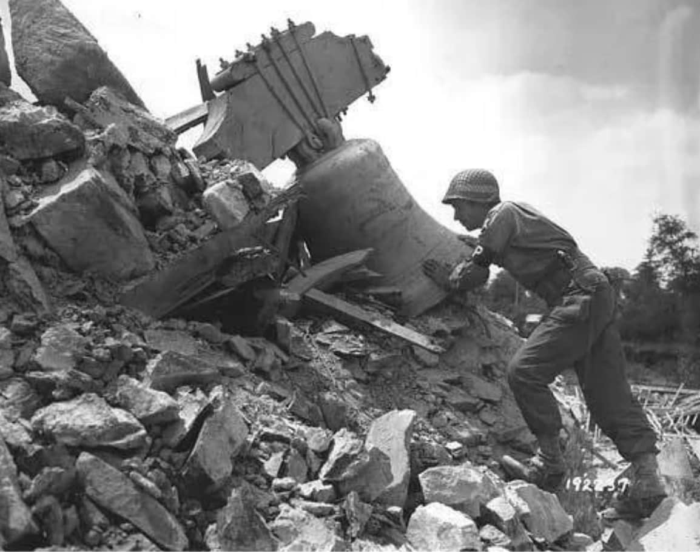
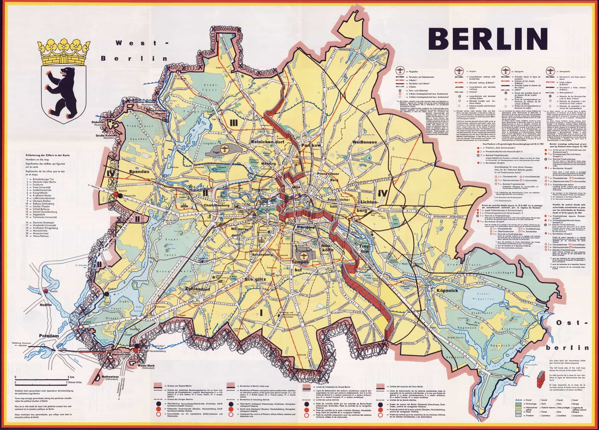
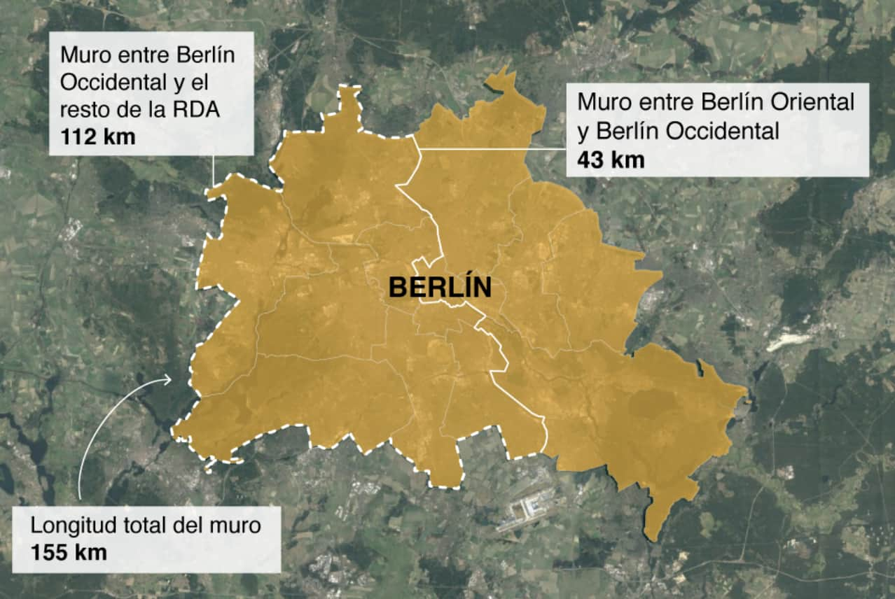
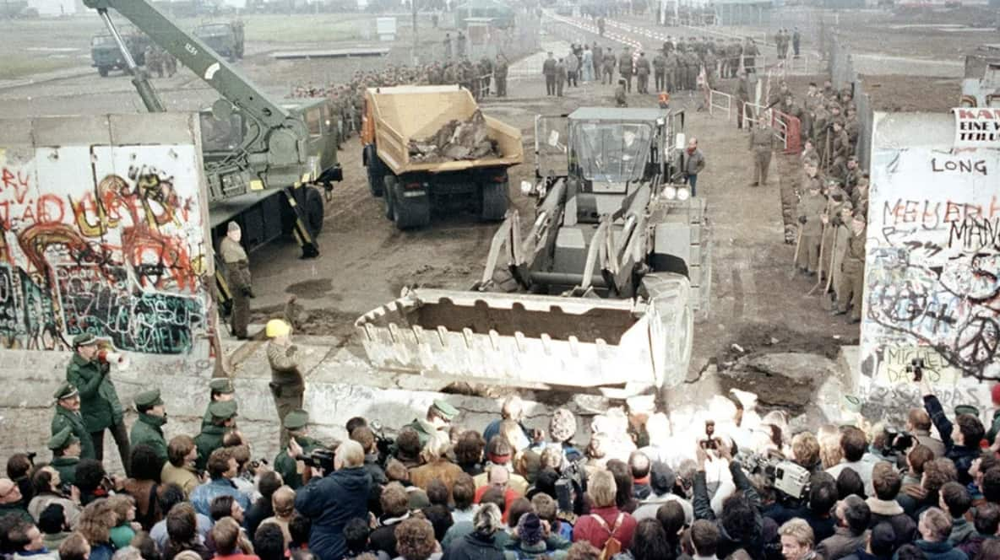

La historia de Berlín, actual capital de Alemania, engloba el período comprendido desde su primera colonización humana en la prehistoria hasta la actualidad. En 1307 Berlín y Cölln (en la actual isla de los museos) se unieron en una ciudad que conservó el nombre de Berlín. En 1415 fue elegida capital de Brandeburgo y posteriormente ha sido capital del Reino de Prusia, del Imperio alemán, de la República de Weimar y de la Alemania nazi.

Durante los últimos meses de la Segunda Guerra Mundial, los aliados bombardearon la mayoría de las ciudades alemanas. La Batalla de Berlín fue el enfrentamiento final entre Alemania y la Unión de Repúblicas Socialistas Soviéticas (URSS), que trajo como consecuencia directa la rendición incondicional de Alemania ante el Ejército Rojo.
Tras el fin de la Segunda Guerra Mundial en Europa, Berlín fue ocupada militarmente en cuatro zonas. En 1948, en los tres sectores occidentales (Berlín Oeste), los Aliados del Oeste establecen el dinero de la República Federal de Alemania, RFA, tras la reforma monetaria. La Unión Soviética replica con el bloqueo de Berlín oeste y la creación de la República Democrática Alemana (RDA en 1949). El bloqueo de Berlín se implantó cuando los accesos por tierra a la parte occidental de la ciudad fueron bloqueados en 1948 por el Ejército Rojo. El bloqueo duró casi un año, y además de las tensiones políticas que provocó entre las potencias mundiales, es recordado por la laboriosa estrategia de aprovisionamiento de la población berlinesa occidental, a la cual abastecieron los ejércitos aliados con un «puente aéreo» a lo largo de varios meses.
En 1961, la RDA construyó el muro de Berlín para separar las dos partes de la ciudad, y de hecho aislar Berlín Oeste de la RDA. La caída del Muro de Berlín se dio en 1989 al aceptar, el gobierno de la RDA, la libre circulación de los ciudadanos entre las dos partes de la ciudad. Al año siguiente con la Reunificación alemanadesaparece la RDA, anexionada de hecho en la RFA, que traslada su capital de Bonn a Berlín en 1990, dando con ello ingreso en la Unión Europea (UE) a la población de la desaparecida república.
Desde 1991, Berlín ha experimentado un período de expansión, similar al que siguió a la guerra franco-prusiana (1870-1871), que terminó con la proclamación del Imperio alemán. Entonces, el auge económico, llevó a una ola de expansión urbana impulsada en un proceso conocido como Gründerzeit (la era de los fundadores) que se desarrolló en medio de la industrialización de la ciudad en la época de los llamados "constructores millonarios", que erigieron bloques de viviendas de cinco pisos en la ciudad. Las redes de calles se ampliaron y se construyeron los principales edificios necesarios para el gobierno.
En ambos casos, el rápido crecimiento en la construcción fue acompañado por una considerable especulación inmobiliaria. Sin embargo, a diferencia de Gründerjahre, la expansión reciente se caracteriza por la despoblación en centro de la ciudad. Además, de su industria anterior solo queda una parte menor, y Berlín está en proceso de convertirse en un centro de la industria de servicios.
A continuación mostramos una pequeña tabla comparativa acerca de la población que reside en Berlín hasta 2022 según datos del Banco Mundial y Naciones Unidas.
| Hombre | Mujer | Bebés | Adolescentes | Más de 100 años |
|---|---|---|---|---|
| 3,477,277 | 1,755,814 | 165,272 | 164,247 | 1,136 |
| Edad promedio | 46 años | |||